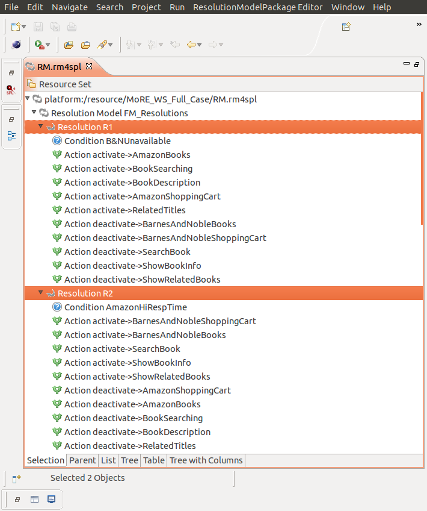
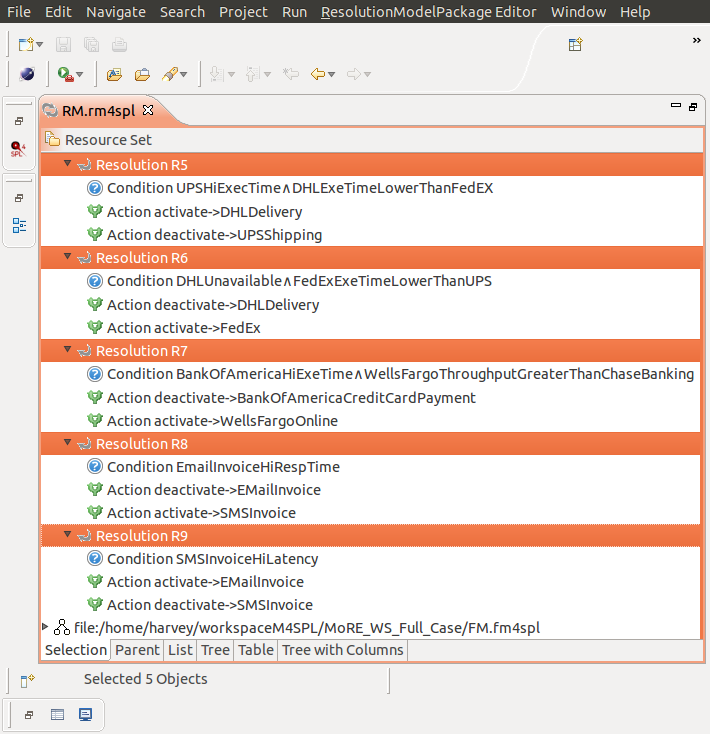

G.H. Alférez (a) ,
V. Pelechano (b), R. Mazo (c), C. Salinesi (c), D. Diaz (c)
a. Facultad de Ingeniería y Tecnología, Universidad de Montemorelos, Apartado 16-5, 67500, Montemorelos, Mexico
b. Centro de Investigación en Métodos de Producción de Software (ProS), Universitat Politècnica de València, Camí de Vera s/n, E-46022 Valencia, Spain
c. CRI, Panthéon Sorbonne University, 90 rue de Tolbiac, 75013 Paris, France
In case all variables are Boolean (in the variability and context models), it is even possible to propose an improved algorithm for the Semi-aliveness verification criterion. Instead of asking the solver for several solutions (until two solutions differ on at least one context variable and one variability variable), it is possible to find the first solution of a unique Constraint Satisfaction Problem (CSP). This CSP consists on two sub-CSPs: the original one and its mirror.
The set of variables in the mirror CSP is a renaming of the set of the original variables: V' is the mirror set of variables in the variability model and C' is the mirror set of variables in the context model. The constraints of the mirror CSP are the same as in the original CSP but are applied to the corresponding renamed variables.
The two sub-CSPs are linked with constraints as follows: a first constraint states that the context variables should be different in both CSPs (i.e., C != C') and similarly for the variables (i.e., V != V'). If a solution exists, then two different contexts (for a partition) entail two different variable values (i.e., two different alternatives from the variability point of view). In other words, it means that the variability model is not insensitive to context changes. Since C is a vector of variables, the constraint C != C' is TRUE if and only if there is at least one variable in C different from its mirror variable in C' (similarly for V != V').
We represent the sum of C and the sum of C' as two polynomials to avoid that changes of different variables values are considered by the solver as the same change when other variables values change; in other words, to constraint the fact that the order of the Boolean variables is important. Finally, even if we duplicate the size of the problem, we only need one request to the solver (the first solution that is found is enough).
The algorithm is described as follows:
semiAliveness_boolean(Variability Model VM, Context Model CM, Solver S){
yyyS.load(VM);
yyyS.load(CM);
yyyCreate the mirror context model CM' (C1', C2', ... Cn') corresponding to the context model CM (C1, C2, ... Cn);
yyyS.load(CM');
yyyCreate the mirror variability model VM' (V1', V2', ... Vm') corresponding to the variability model VM (V1, V2, ... Vm);
yyyS.load(VM');
yyyS.loadNewConstraint(C1 * 1 + C2 * 2 + C3 * 4 + ...+ Cn * n^2 <> C1' * 1 + C2' * 2 + C3' * 4 + ...+ Cn' * n^2);
yyyS.loadNewConstraint(V1 * 1 + V2 * 2 + V3 * 4 + ...+ Vm * m^2 <> V1' * 1 + V2' * 2 + V3' * 4 + ...+ Vm' * m^2);
yyySolution sol = S.giveOneSolution();
yyyIf (sol != FALSE){
yyyyyyWrite ("The Boolean variability model "+VM+" is NOT insensitive to changes into the Bolean context model "+ CM);
yyy} Else {
yyyyyyWrite ("The Boolean variability model "+VM+" is insensitive to changes into the Bolean context model "+ CM);
yyy}
}
We created a video demonstration of our proposed framework for the dynamic adaptation of service compositions with variability models. In this demonstration, MoRE-WS uses a variability model to guide two dynamic adaptations in our non-trivial running example when the B&NUnavailable and the UPSHiExecTime context conditions are fulfilled in a tight time frame. NOTICE: In order to watch this video on HD, please open it directly on Vimeo.
GQM model 1 has the following goal: “Efficient generation time of variability model configurations from the systems analyst’s viewpoint.” This model has the following related research question (Q1): “What is the required time to generate the adaptation space?”
GQM model 2 has the following goal: “Reduce the complexity of the adaptation space from the systems analyst's viewpoint.” This model has the following related research question (Q2): “Do a small variability model and a set of resolutions can be used to describe a large adaptation space?”
In order to answer Q1 and Q2, we carried out an experiment using the variability model in our running example with 36 features and nine resolutions. MOSKitt4SPL files that were used in this experiment can be downloaded here. This compressed file contains the variability model, the resolutions and the generated adaptation space (described as a state machine). Please decompress it and import the decompressed folder into the workspace of MOSKitt4SPL.
The following MOSKitt4SPL's screenshots show the set of resolutions that were executed. Each resolution has a unique identifier ID, where ID = 1...9:
R1B&NUnavailable is triggered when the Barnes & Noble Books service operation is unavailable. In this case, the Amazon Books functionality is activated. Since the Amazon Books feature requires the Amazon Shopping Cart feature, then the Amazon Shopping Cart functionality is also activated. R2AmazonHiRespTime is triggered when the response time of the Amazon Books service operation is high. In this case, the Barnes & Noble Books functionality is activated. Since the Barnes & Noble Books feature requires the Barnes & Noble Shopping Cart feature, then the Barnes & Noble Shopping Cart functionality is also activated:

R3B&NShoppingCartUnavailable is triggered when the Barnes & Noble Shopping Cart service operation is unavailable. In this case, the Amazon Shopping Cart functionality is activated. Since the Amazon Shopping Cart works with Amazon Books, then the Amazon Books functionality is also activated. R4AmazonShoppingCartUnavailable is triggered when the Amazon Shopping Cart service operation is unavailable. In this case, the Barnes & Noble Shopping Cart service operation is activated. Since the Barnes & Noble Shopping Cart functionality works with Barnes & Noble Books, then the Barnes & Noble Books functionality is also activated:
R5UPSHiExecTime^DHLExeTimeLowerThanFedEX is triggered when the exection time of the UPS Shipping service operation is higher than 3,000 milliseconds AND the execution time of the DHL Delivery service operation is lower than the execution time of the FedEX Express service operation. In this case, the UPS Shipping functionality is deactivated and the DHL Delivery functionality is activated. R6DHLUnavailable^FedExExeTimeLowerThanUPS is triggered when the DHL Delivery service operation is unavailable AND the execution time of the FedEX Express service operation is lower than the execution of the UPS Shipping service operation. In this case, the FedEX Express functionality is activated and the DHL Delivery functionality is deactivated. R7BankOfAmericaHiExeTime^WellsFargoThroughputGreaterThanChaseBanking is triggered when the execution time of the Bank of America Credit Card Payment service operation is higher than 2,600 millisecons AND the throughput for the Wells Fargo Online service operation is greater than the throughput for the Chase Banking service operation. In this case, the Wells Fargo Online functionality is activated and the Bank of America Credit Card Payment functionality is deactivated. R8EmailInvoiceHiRespTime is triggered when the response time of the E-mail Invoice service operation is greater than 1,000 milliseconds. In this case, the SMS Invoice functionality is activated and the E-mail Invoice functionality is deactivated. R9SMSInvoiceHiLatency is triggered when the SMS Invoice service operation has a latency higher than 5 milliseconds. In this case, the E-mail Invoice functionality is activated and the SMS Invoice functionality is deactivated:

The initial current configuration has the following inactive features: Amazon Books, Book Searching, Book Description, Related Titles, Amazon Shopping Cart, Wells Fargo Online, Chase Banking, SMS Invoice, FedEX Express, and DHL Delivery.
The diagram with the generated adaptation space can be downloaded here (states express configurations and transitions express resolutions). See the configurations' details on StateMachine.sm4spl in this compressed file.
MOSKitt4SPL generated an adaptation space with 40 variability model configurations and 360 transitions among configurations in less than three seconds. This is evident in the video demonstration.